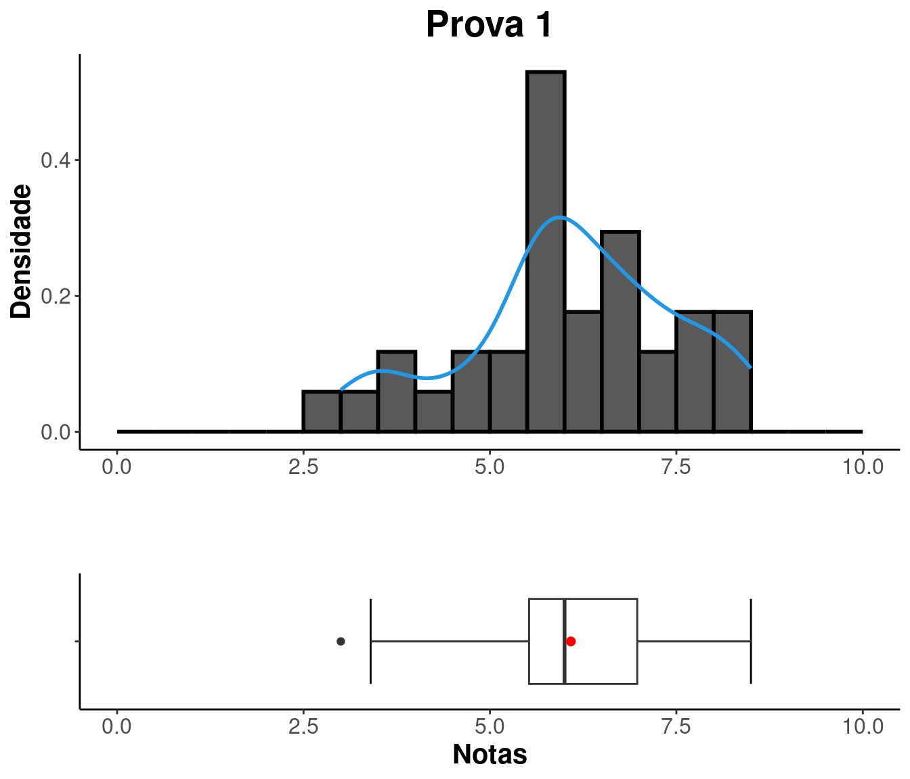
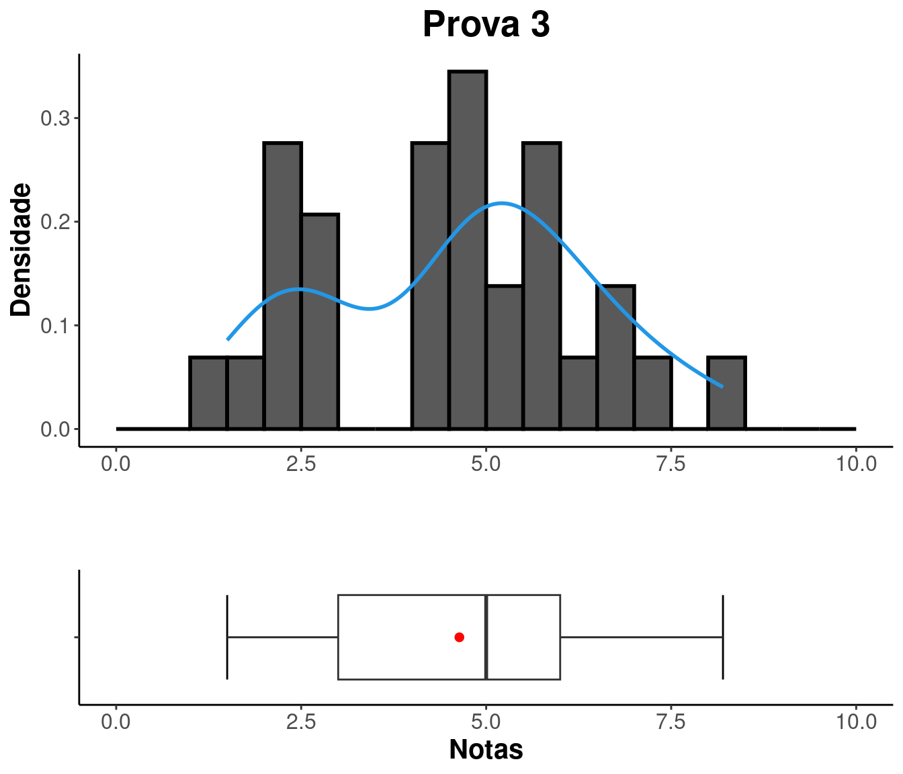

Estatística II
Prof. Me. Lineu Alberto Cavazani de Freitas
2023/01 - Engenharia Industrial Madeireira
2023/01 - Engenharia Industrial Madeireira
Notas e frequência
Busque sua situação digitando seu GRR na caixa “Search”.
Análise das notas
S1
| Minimo | Quartil_1 | Media | Mediana | Quartil_3 | Maximo |
|---|---|---|---|---|---|
| 0 | 6.25 | 7.278 | 9.5 | 10 | 10 |

S2
| Minimo | Quartil_1 | Media | Mediana | Quartil_3 | Maximo |
|---|---|---|---|---|---|
| 0 | 0 | 6.2 | 8.57 | 10 | 10 |

S3
| Minimo | Quartil_1 | Media | Mediana | Quartil_3 | Maximo |
|---|---|---|---|---|---|
| 0 | 3.33 | 6.565 | 8.33 | 10 | 10 |


|

|

|